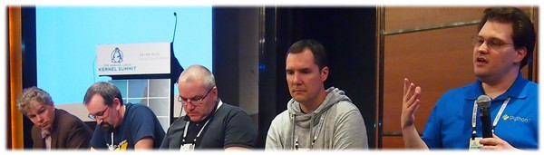
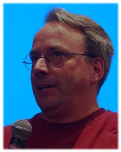

Developer workflow security
Ted started by saying that he is not, in general, worried about attackers trying to steal things from his laptop. He is worried about attempts to steal keys, though, so those are stored on a YubiKey rather than the laptop. He tried SELinux for a while, but found it to be too painful for the amount of security gained. With regard to the patches he handles, he said that the ext4 filesystem doesn't get a huge volume of patches, so he is able to look them over closely before sending them on.

Josh, instead, worries about what will happen if his laptop is stolen. So he uses full-disk encryption and, as a rule, shuts the system down hard rather than suspending it. For the most part, though, he does not expect to be targeted personally, so he mostly worries about defending himself from mass attacks. If you download a tarball, configure, and build it, are you doing that in an isolated environment?
Konstantin started by noting that he has root access to kernel.org, so he sometimes sleeps poorly at night. He feels that he probably is a target, and that he needs to be careful to prevent a compromise of the kernel.org infrastructure. To that end, he and his team have been working on a set of security policies that have been made available on GitHub.
James Morris stated briefly that any developer should feel like they could be target; they are developing software for billions of machines, after all. One special measure he takes is to ensure that his cellphone is not connected to his work in any way.
Kees takes care to ensure that his laptop only authenticates outwardly; it does not accept any kind of incoming connection. He does builds in containers to keep them isolated. His only browser is Chrome, due to the way it uses containment for many of its operations. And he tries to get others to look at patches before accepting them.
James Bottomley said that his process was mostly about "key hygiene." He uses subkeys with short expiration times; his working systems have no access to his main keys. With regard to code acceptance in the SCSI tree, he used to review all patches, but now trusts reviews from certain other developers as well.
Linus jumped in to ask how many developers in the room were carrying their
main work machines with them; quite a few were. How many were using disk

Most of the rest of this session was spent discussing the GPG keys used to sign tags in Git repositories. Somebody noted that a pull request had been accepted, even though it had been signed by a revoked key. Linus answered that key revocation does not always work as well as one might hope, and that revoked keys will often be validated by GPG. Beyond that, he carries his own keyring; a revocation may not be present there. If you revoke a key, he said, scream loudly so that he knows about it. Linus also said that James's use of subkeys was not necessarily helpful. It is, he said, a case of trusting the tool rather than trusting the person.
Finally, there was a brief discussion about accepting pull requests. Some maintainers will pull directly from another developer's repository, while others want to see patches on a public list. It comes down to a matter of trust; don't pull from a developer you don't trust. And, in the end, as Josh noted, somebody has to be reading and reviewing every patch. If patches are being pulled directly into a repository, the person doing the pulling has to be confident that this review has already taken place.
The session ended without any general conclusions regarding safe developer
workflow. One suspects this is a topic that will come around again in the
future. A lot depends on the security of a large number of developer
laptops and repositories; simply hoping that all of those developers will
follow best security practices seems like a path to trouble.
| Index entries for this article | |
|---|---|
| Kernel | Security |
| Conference | Kernel Summit/2015 |
Posted Nov 3, 2015 21:29 UTC (Tue)
by kh (guest, #19413)
[Link] (1 responses)
If it is brute force attempts, is that mitigated with fail2ban, sshguard, etc.?
Posted Nov 4, 2015 1:44 UTC (Wed)
by mricon (subscriber, #59252)
[Link]
Posted Nov 3, 2015 22:12 UTC (Tue)
by jstultz (subscriber, #212)
[Link] (1 responses)
Posted Nov 3, 2015 22:35 UTC (Tue)
by mathstuf (subscriber, #69389)
[Link]
Posted Nov 16, 2015 5:36 UTC (Mon)
by pabs (subscriber, #43278)
[Link]
ssh daemon
ssh daemon
Developer workflow security
Are there any pointers to specific work-flows for this?
Developer workflow security
Developer workflow security